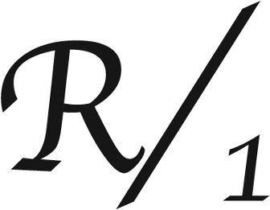
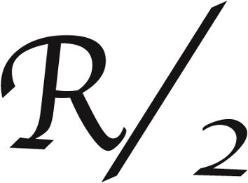

106 (hébr. 107) | Reconnaître l’amour du Seigneur |
Alléluia !
1Rendez grâce au Seigneur : Il est bon !
Éternel est son amour !
2Ils le diront, les rachetés du Seigneur,
qu’il racheta de la main de l’oppresseur,
3qu’il rassembla de tous les pays,
du nord et du midi, du levant et du couchant.
*
4Certains erraient dans le désert
sur des chemins perdus, *
sans trouver de ville où s’établir :
5ils souffraient la faim et la soif,
ils sentaient leur âme défaillir.

6Dans leur angoisse, ils ont crié vers le Seigneur,
et lui les a tirés de la détresse :
7il les conduit sur le bon chemin,
les mène vers une ville où s’établir.

8Qu’ils rendent grâce au Seigneur de son amour,
de ses merveilles pour les hommes :
9car il étanche leur soif,
il comble de bien les affamés !
*
10Certains gisaient dans les ténèbres mortelles,
captifs de la misère et des fers :
11ils avaient bravé les ordres de Dieu
et méprisé les desseins du Très-Haut ;
12soumis par lui à des travaux accablants,
ils succombaient, et nul ne les aidait.
13Dans leur angoisse, ils ont crié vers le Seigneur,
et lui les a tirés de la détresse :
14il les délivre des ténèbres mortelles,
il fait tomber leurs chaînes.
15Qu’ils rendent grâce au Seigneur de son amour,
de ses merveilles pour les hommes :
16car il brise les portes de bronze,
il casse les barres de fer !
*
17Certains, égarés par leur péché,
ployaient sous le poids de leurs fautes :
18ils avaient toute nourriture en dégoût,
ils touchaient aux portes de la mort.
19Dans leur angoisse, ils ont crié vers le Seigneur,
et lui les a tirés de la détresse :
20il envoie sa parole, il les guérit,
il arrache leur vie à la fosse.
21Qu’ils rendent grâce au Seigneur de son amour,
de ses merveilles pour les hommes ;
22qu’ils offrent des sacrifices d’action de grâce,
à pleine voix qu’ils proclament ses œuvres !
*
23Certains, embarqués sur des navires,
occupés à leur travail en haute mer,
24ont vu les œuvres du Seigneur
et ses merveilles parmi les océans.
25Il parle, et provoque la tempête,
un vent qui soulève les vagues :
26portés jusqu’au ciel, retombant aux abîmes,
ils étaient malades à rendre l’âme ;
27ils tournoyaient, titubaient comme des ivrognes :
leur sagesse était engloutie.
28Dans leur angoisse, ils ont crié vers le Seigneur,
et lui les a tirés de la détresse,
29réduisant la tempête au silence,
faisant taire les vagues.
30Ils se réjouissent de les voir s’apaiser,
d’être conduits au port qu’ils désiraient.
31Qu’ils rendent grâce au Seigneur de son amour,
de ses merveilles pour les hommes ;
32qu’ils l’exaltent à l’assemblée du peuple
et le chantent parmi les anciens !
*
33C’est lui qui change les fleuves en désert,
les sources d’eau en pays de la soif,
34en salines une terre généreuse
quand ses habitants se pervertissent.
35C’est lui qui change le désert en étang,
les terres arides en source d’eau ;
36là, il établit les affamés
pour y fonder une ville où s’établir.
37Ils ensemencent des champs et plantent des vignes :
ils en récoltent les fruits.
38Dieu les bénit et leur nombre s’accroît,
il ne laisse pas diminuer leur bétail.
39Puis, ils déclinent, ils dépérissent,
écrasés de maux et de peines.
40Dieu livre au mépris les puissants,
il les égare dans un chaos sans chemin.
41Mais il relève le pauvre de sa misère ;
il rend prospères familles et troupeaux.
42Les justes voient, ils sont en fête ;
et l’injustice ferme sa bouche.
43Qui veut être sage retiendra ces choses :
il y reconnaîtra l’amour du Seigneur.